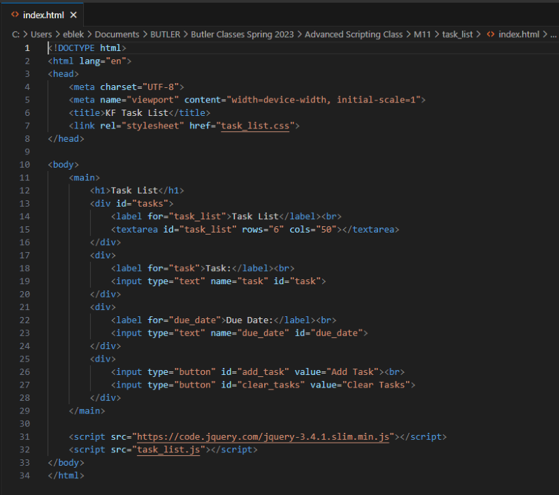
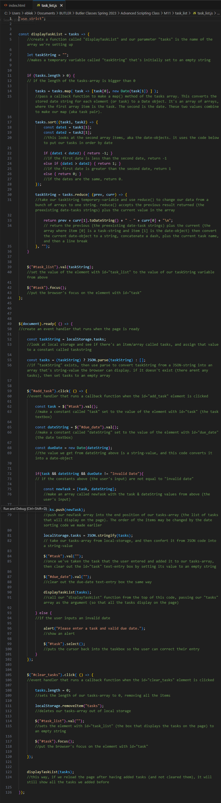

Tasklist Maps and Arrays Exercise
A Map is a collection of one or more data points that holds key-value pairs, just like an Object. But the main difference is that with a Map, these pairs can be any datatype. You can also have repeating values in a map as long as they have unique keys. In order to create a Map we need to use Map(). This will accept an array of arrays (an array where the items are also arrays).
In this exercise, we worked with arrays as well as a Map. We made an app that lets users add a task with a date to a list.
Try the app here, and see the code that makes it work below.
The visible part of the app is the html in the below index.html file.
The script that powers our task list is the below task_list.js file.
